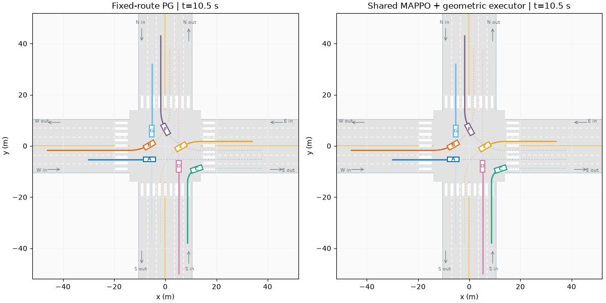
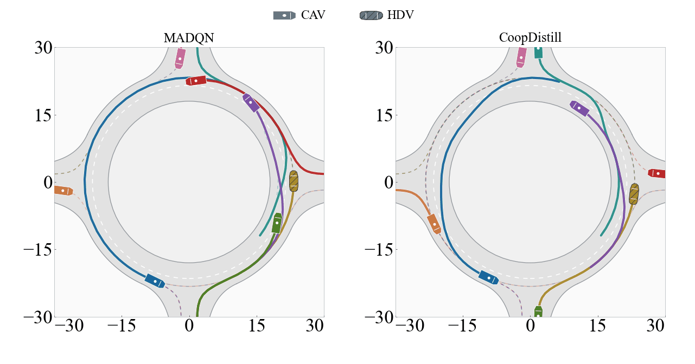
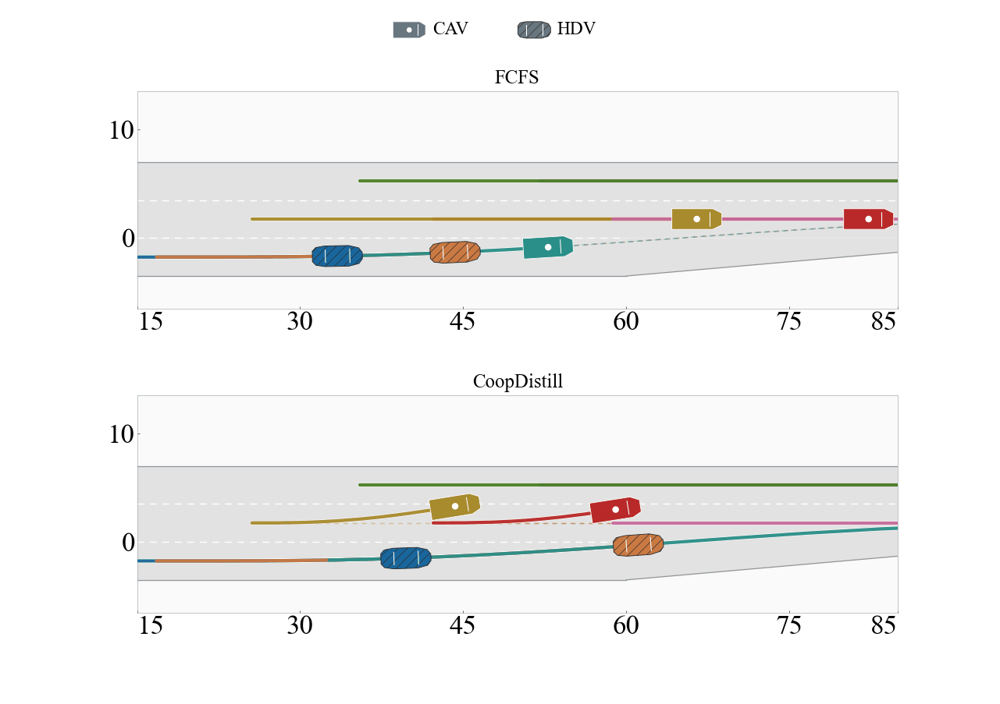

Residual policy learning
A shared MAPPO actor learns longitudinal acceleration, conflict-approach timing, and lateral path corrections around the PG reference.
Equilibrium-Guided Multi-Agent Policy Distillation
for Cooperative Driving
1 Tongji University2 Shanghai Jiao Tong University
Cooperative driving extends autonomous driving from individual vehicle decisions to joint maneuvers that improve traffic safety and efficiency. Optimization-based methods impose safety constraints but often fix paths to simplify multi-vehicle planning, limiting spatial flexibility. Multi-agent reinforcement learning (MARL) explores alternatives through interaction, but coordinated learning and safe execution remain challenging. Their integration nevertheless faces challenges in exploration efficiency, experience allocation, and execution reliability. To address these challenges, this paper proposes CoopDistill, an equilibrium-guided multi-agent policy distillation framework. A potential-game (PG) formulation provides a fixed-path longitudinal reference, around which a residual MARL policy learns longitudinal acceleration, conflict-approach timing, and lateral path corrections. A hard-case curriculum concentrates experience on interactions that PG leaves unresolved or substantially delayed. A comparative rollout selector evaluates the joint consequences of learned corrections against PG before choosing the executed action. Experiments in merging, roundabout, and intersection scenarios compare CoopDistill with six baselines at four connected automated vehicle penetration levels. Relative to PG, success improves by 2.1-27.1 percentage points and delay decreases by 7.3-27.3%, with no observed collisions.
A potential-game reference structures cooperation. Residual learning expands the available maneuvers, a hard-case curriculum directs training experience, and comparative rollouts determine which joint decision is executed.
A shared MAPPO actor learns longitudinal acceleration, conflict-approach timing, and lateral path corrections around the PG reference.
PG-only episode outcomes identify unresolved or delayed interactions, which are mixed with fresh scenes during training.
Candidate and reference are evaluated from the same traffic state. PG is retained when a proposal fails the feasibility or utility conditions.
Paired visualizations show how motion and local path adjustments change vehicle interactions in intersections, roundabouts, and merging areas.
01 / Intersection
Seven vehicles approach a shared intersection. PG retains fixed paths and becomes blocked by mutual waiting; CoopDistill coordinates local path and motion adjustments to create room for passage.

02 / Roundabout
Vehicles interact as their routes converge on the circulating roadway. In this case, MADQN's forward progression leads to a collision, while CoopDistill coordinates movement through the interaction.

03 / Merging area
Under FCFS, vehicles on the ramp wait while the mainline stream advances. CoopDistill adjusts local paths and progress to release space for the merging vehicles and clear the interaction sooner.

@misc{fang_coopdistill,
title = {CoopDistill: Equilibrium-Guided Multi-Agent Policy
Distillation for Cooperative Driving},
author = {Shiyu Fang and Sheng Zhao and Jiarui Zhang and
Chengkai Xu and Xiaocong Zhao and Peng Hang and Jian Sun},
year = {2026},
url = {https://github.com/FanGShiYuu/CoopDistill}
}